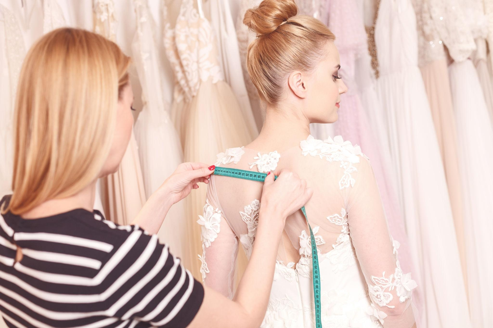
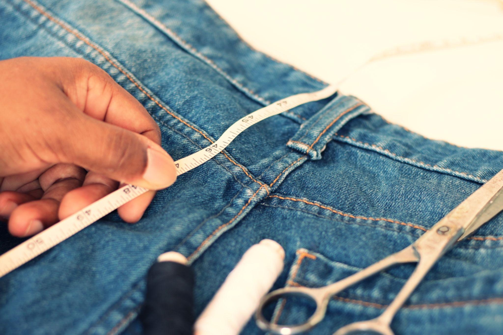
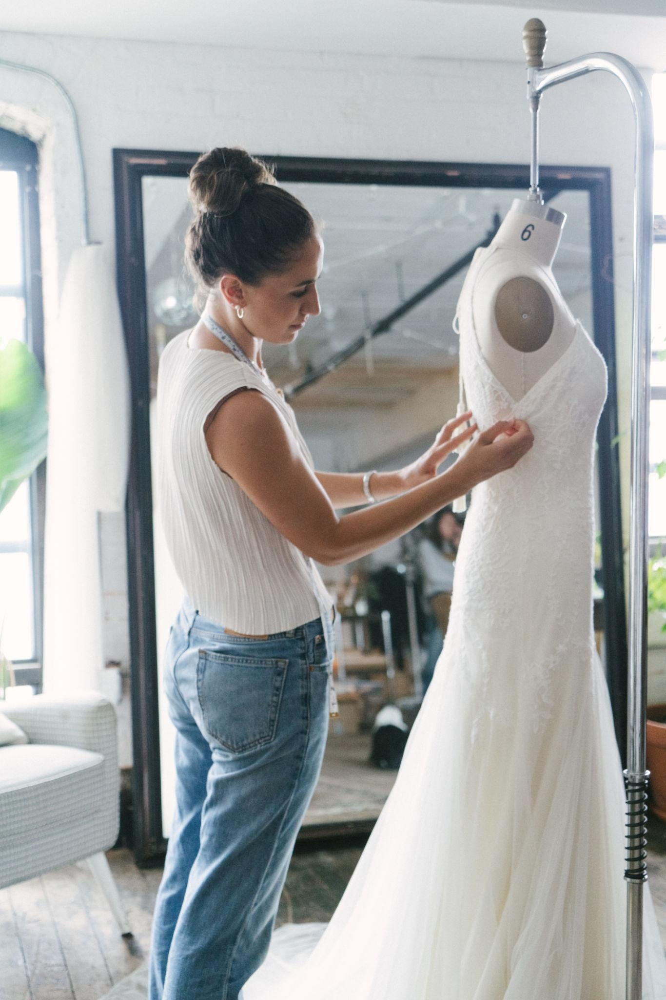

Our Expertise
We provide high-end tailoring for both men and women. Whether it’s a simple hem or a complex structural resize of a designer gown, our atelier handles every fabric with the utmost respect.
Turnaround Time: 3-7 Business Days (Express available)
What we do:
- Suit & Blazer Tapering
- Bridal & Evening Gown Resizing
- Denim Hemming (Original Finish)
- Waist Adjustments & Zip Replacements
- Shoulder Narrowing
Work Samples



